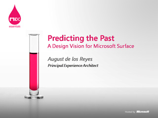

Getting Clued into Experience Management
 Speaker(s): Lou Carbone
Speaker(s): Lou Carbone
The Business of Microsoft Silverlight
 Speaker(s): Martin Tirion
Speaker(s): Martin Tirion
Digital Creativity Advertising and Video
 Speaker(s): David Pugh-Jones
Speaker(s): David Pugh-Jones
Panel Discussion: The Designer-Developer Workflow
 Speaker(s): Hans Frederiks
Speaker(s): Hans Frederiks
Predicting the Past: A Design Vision for Microsoft Surface

Speaker(s): August de los Reyes